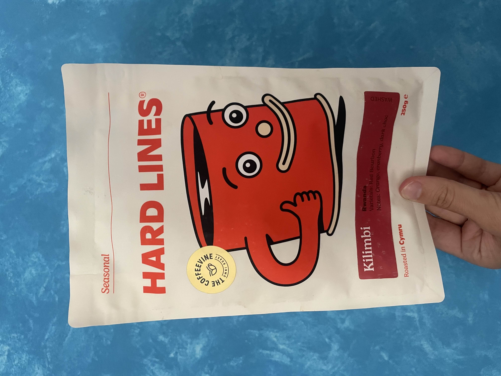
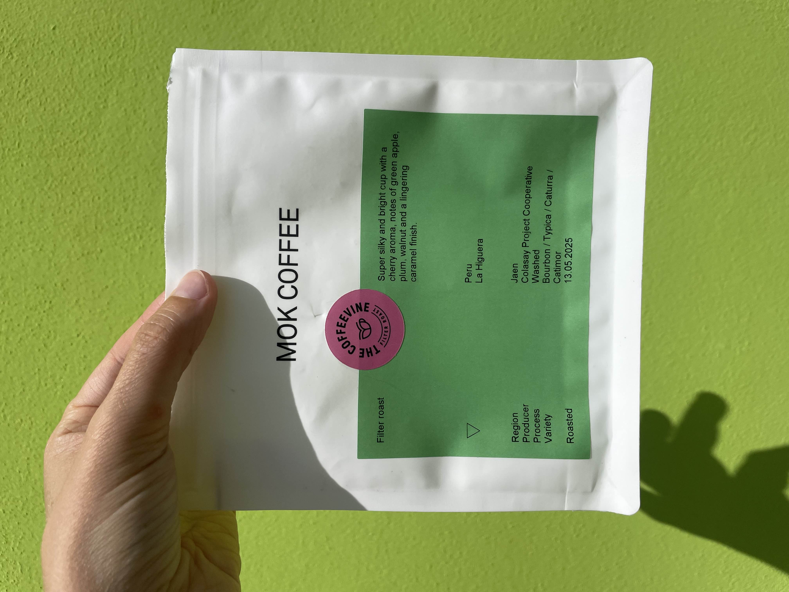
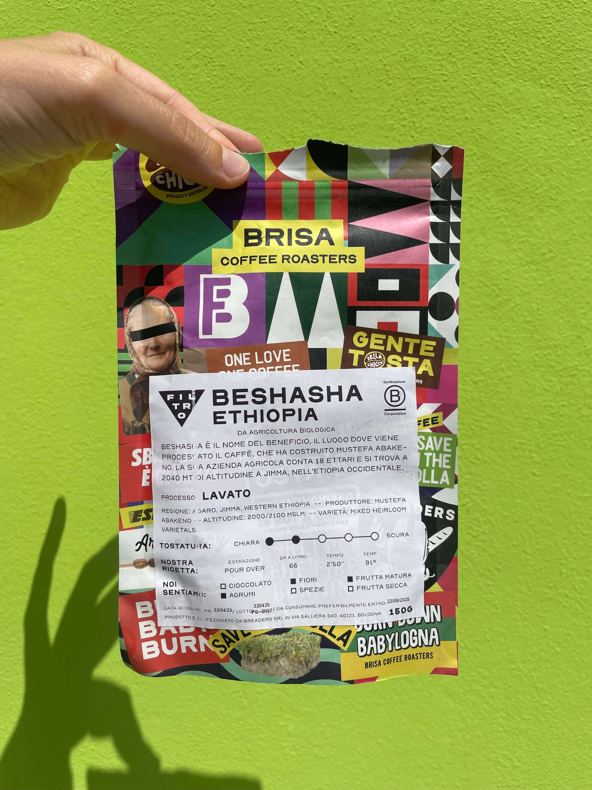
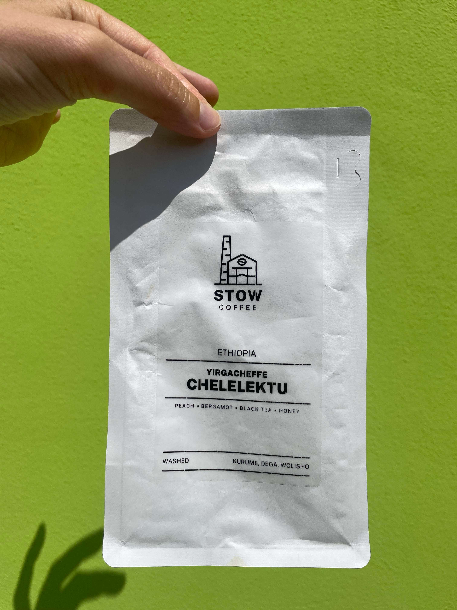
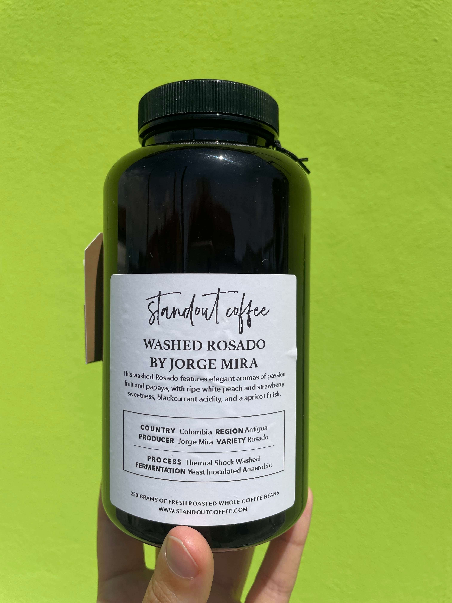
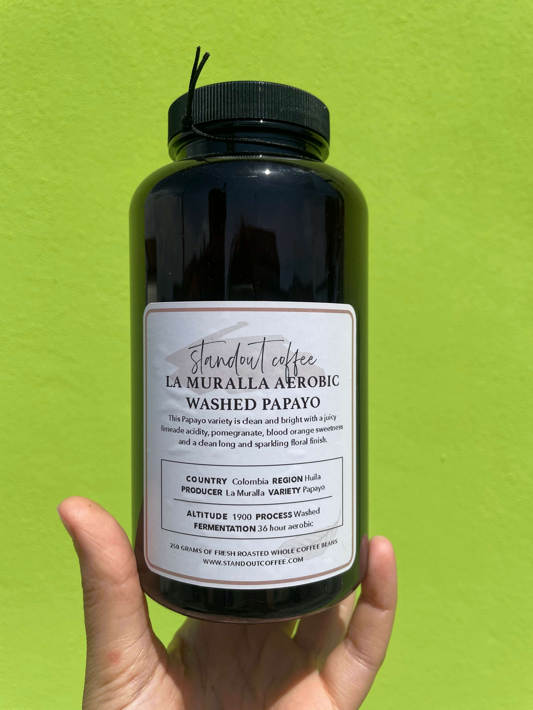
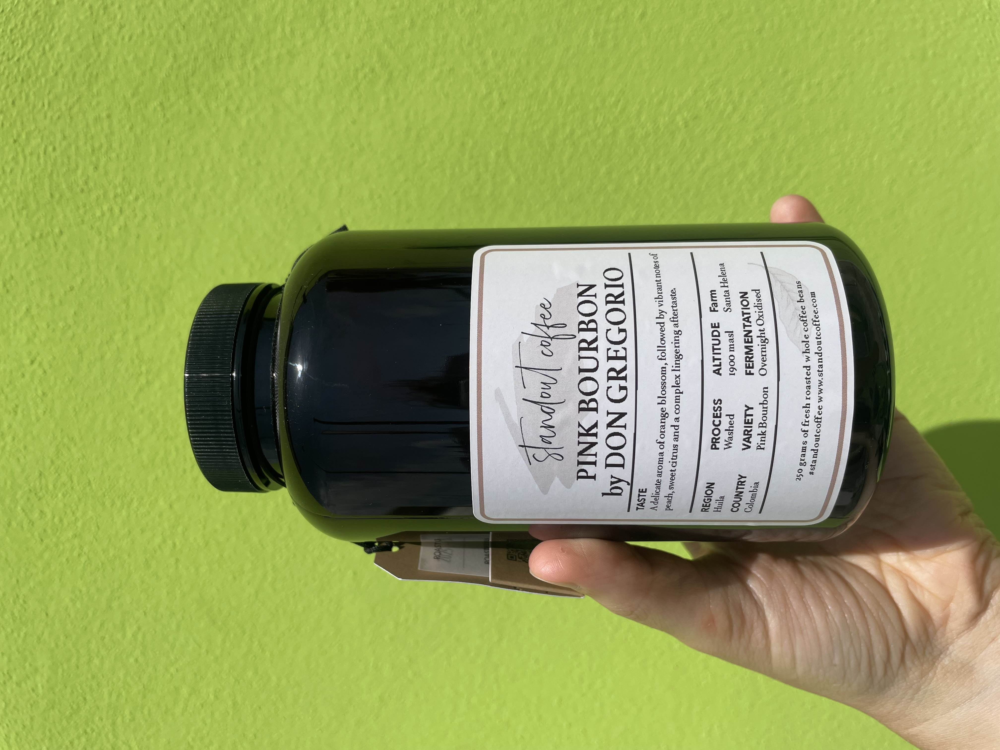
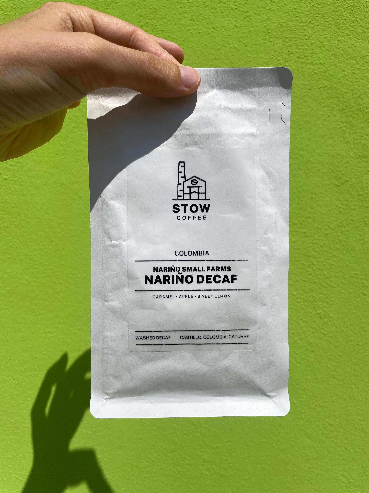
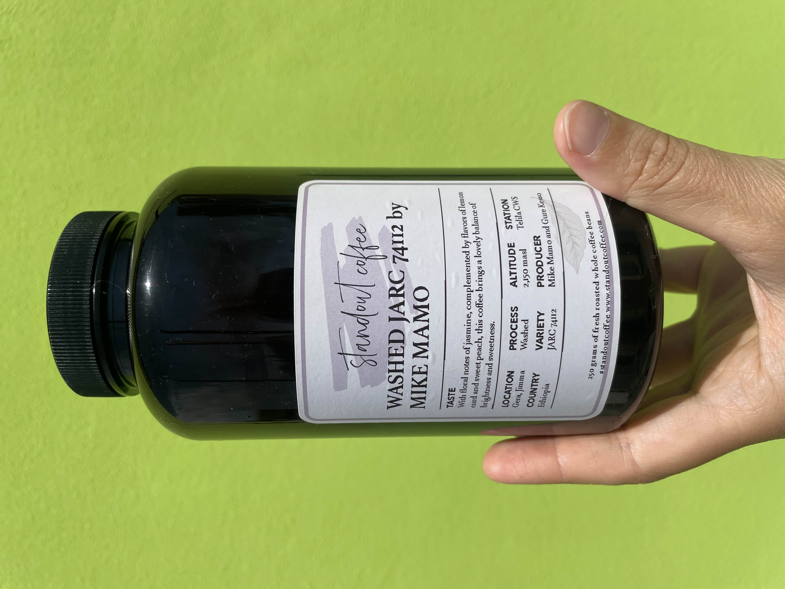
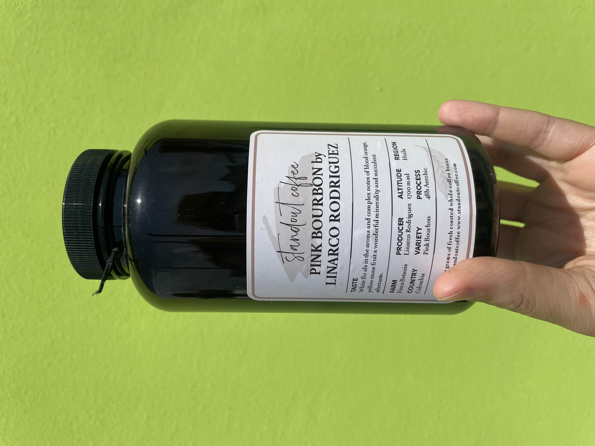

My coffee log below. Hover over an image to see the tasting notes.
The most recent beans that I've tried appear first.

Wholesome, not acidic, this roast tastes like a basic foundation from which to build. Two external opinions were: "woody" and "Umm… grapefruit"; which together summarize the basic feeling at stake that this coffee is something of the earth. My take would be that a cup of this is like a painting of a landscape, a sensuous rendering of a backdrop against which specific memories can find their way to the surface. If the sips start as snowfall on the teeth (sweet with a nutty inner), by the end they have become a beachy plain with scattered driftwood.

Silky is right; there is something very delicate and memorable about this roast. Best in a pourover via chemex (300ml/20g), with a 3 min 40 sec extraction. The bright wash of green apple is what greets (true to the tasting note), and the caramel and walnut is the bidding goodbye as is slithers down the throat.

A bakery and roastery in Bologna. The bread is very good, and this coffee is decent– which is more than one can say about many cafes in Italy.

The memory is not super fresh in my mind, but I remember the black tea / honey notes being pronounced.

I don't recall!

I don't recall!

I don't recall!

I had a very good decaf about a year ago from Stow, and so decided to try this one. It wasn't quite as good, but still very enjoyable.

I don't recall!

I don't recall!